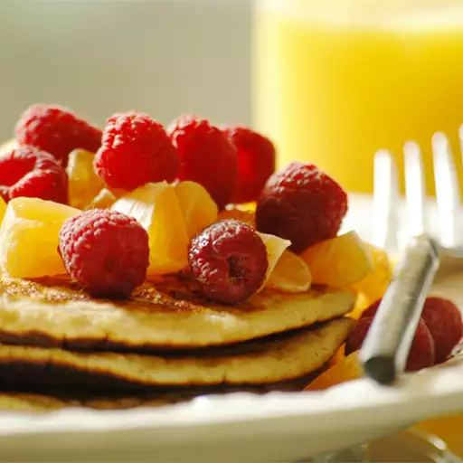

Double Whole Grain Pancakes

Double Whole Grain Pancakes Description
They are the BEST! It's prepared in 15 minutes, 20 minutes cook time and can yield to 28 pancakes. Enjoy!
Ingregients
- 1 cup all-purpose flour
- 1 1/3 cups dry milk powder
- 1 teaspoon baking powder
- 1 1/2 teaspoons baking soda
- 1 teaspoon salt
- 2 cups whole wheat flour
- 3/4 cup white sugar
- 4 eggs, lightly beaten
- 3 cups water
- 1/4 cup butter, melted
- 3 tablespoons vinegar
Directions
- In a large bowl, sift all-purpose flour, milk powder, baking powder, baking soda and salt. Stir in whole wheat flour. In a small bowl, combine sugar, eggs, water, butter and vinegar. Make a well in the flour mixture, and pour in the egg mixture. Mix until smooth.
- Heat a lightly oiled griddle or frying pan over medium heat. Pour or scoop the batter onto the griddle, using approximately 1/4 cup for each pancake. Cook until pancakes are golden brown on both sides; serve hot.
Back to top
Back to homepage